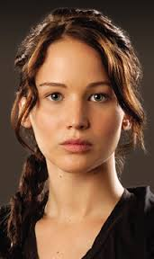
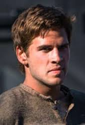
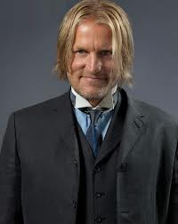
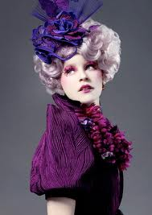

Actors
- Jennifer Lawrence - Katniss Everdeen
- 
- Born August 15, 1990. Jennifer Lawrence's site Jennifer won an Academy Award for her role as Ree in 2010's Winter's Bone. Then in 2011 she played Mystique in X-Men: First Class. She is best known for her role as Katniss Everdeen.
- Josh Hutcherson - Peeta Mellark

- Born October 12, 1992 Josh Hutcherson's site Josh won a Young Artist award for his role in Zathura: A Space Adventure.
- Liam Hemsworth - Gale Hawthorne
- 
- Born January 13, 1990 Liam's career began with various parts in Australian television shows. His first major role was in The Last Song(2010) where he played opposite Miley Cyrus with whom he is now engaged.
- Woody Harrelson - Haymitch Abernathy
- 
- Born July 23, 1961 Woody won an Academy Award for his role on the television series Cheers.
- Elizabeth Banks - Effie Trinket
- 
- Born February 10, 1974 Elizabeth Bank's site Elizabeth's first breakthrough role was as Betty Brant in 2002's Spider-Man.